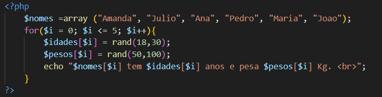

Vetores
Deixando de lado nosso belo cantor, vamos falar um pouco sobre vetores.
O que são?
Na matemática, os vetores são segmentos de reta orientados por uma seta em uma extremidade. Já na programação os vetores são variáveis que armazenam mais de um dado. O que é comumente usado em banco de dados, assim chmanando cada dado conforme a necessidade.
Um vetor é um array unidimensional, ou seja, de uma única dimensão; é semelhante a uma linha única de dados em uma planilha ou tabela. As posições em um vetor são sempre indicadas pelo número da posição entre colchetes [ ]. Os vetores são tipos que permitem o armazenamento de uma coleção de valores do mesmo tipo, ou seja, os vetores são estruturas de dados homogêneas (formados por elementos de mesmo tipo).
Os elementos de um vetor:
- Possuem o mesmo tipo;
- São armazenados em posições consecutivas na memória;
- São referenciados a partir de:
- Um mesmo nome (nome da variável que representa o vetor);
- Um índice que representa sua posição no vetor.
Cada elemento possui uma posição dentro de um vetor, o que significa que cada elemento pode ser acessado usando um número inteiro, conhecido como índice. Em muitas linguagens de programação, os vetores são indexados a partir de zero. Os vetores são amplamente utilizados em programação para representar dados de uma forma estruturada e para realizar operações como pesquisa, ordenação e manipulação de dados em massa. Eles também são úteis para armazenar coleções de objetos ou valores que possuem relações entre si.
Abaixo, temos a sintaxe de criação de um vetor:
<variável>: vetor[intervalo] de <tipo>; Ao declarar que um vetor tem n posições, essa informação não pode ser mais mudada em tempo de execução de um programa, o que torna um vetor do tipo estático.
Exercício comentado
Faça um algoritimo que preencha um array com o nome de 6 pessoas, em seguida preencha mais dois arrays, um para a idade (18 a 30 aleatório) e outro para o peso (de 50 a 100 alatório) dessas pessoas, calcule e mostre:
